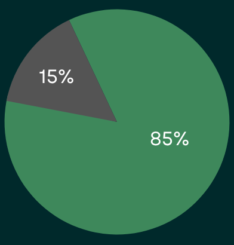

Oubliez les problèmes de tailles
Dans le cadre de mon TFA je me suis penché sur les différents problèmes que les utilisateurs rencontrent lors d’achat de vêtements en ligne et plus particulièrement pour la sélection de taille.
Dans le cadre de mon TFA je me suis penché sur les différents problèmes que les utilisateurs rencontrent lors d’achat de vêtements en ligne et plus particulièrement pour la sélection de taille.
Pour confirmer la viabilité de mon projet, j'ai réalisé des interviews afin de déterminer s'il existe une demande pour cela. J’ai interviewé 2 personnes en face à face, 2 autres en appel, et 9 personnes via un formulaire.
J’ai ensuite tout retranscrit dans le formulaire afin de tout regrouper au même endroit.La plupart des personnes rencontrées étaient âgées entre 20 et 30 ans et deux d’entre elles de plus de 40 ans. J’ai pu observer que 11 d’entre elles ont déjà acheté des vêtements en ligne et que 7 d’entre elles ont déjà rencontré des problèmes lors de la sélection de la taille.
On a par exemple Anthony qui nous dit que sa taille varie parfois en fonction de la marque qu’il porte et de la coupe du vêtement et que la dernière fois l’article posait problèmes au niveau de la longueur des manches. Il a donc dû retourner l’article. A la fin de l’interview on peut remarquer que 76,9% des personnes interrogées sont intéressées par un outil les aidant à choisir leur taille plus facilement.

Lors de mes interviews j’ai pu identifier plusieurs problèmes tel que le guide des tailles qui n’est pas toujours fiable pour tout les modèles, ne pas avoir d’outil de mesures à disposition, leur taille change en fonction de la marque et certains se situent aussi entre deux tailles. Les problèmes de tailles concernent plusieurs endroits des vêtements tel que au niveau des manches, des épaules, longueur globale pour le haut du corps, également longueur jeans.
Ma solution serait de proposer un outil pour aider les utilisateurs à choisir la taille qui leur correspondent le mieux lors d’achats de vêtements en ligne.
Réduire l’impact écologique
Faciliter l’achat en ligne
Cet outil fonctionnera via un site ou l’utilisateur pourra copier/coller l’url du vêtement et cela lui indiquera la taille. Je créerai également une extension qui pourra fonctionner directement sur la page de l’article, cela sera plus facile pour les utilisateurs et leur permettra de gagner du temps. Afin de fonctionner l’outil demandera l'âge des personnes, leur morphologie, leur taille, comment ils aiment porter leur vêtements, la marque du vêtement,... Tout ça de manière confidentielle.
INTRODUCTION
+
Texte supplémentaire pour l'introduction 2.
Vous pouvez y ajouter toutes les informations que vous souhaitez.
Phrase introductive 2
+
Texte supplémentaire pour l'introduction 2.
Vous pouvez y ajouter toutes les informations que vous souhaitez.
Phrase introductive 2
+
Texte supplémentaire pour l'introduction 2.
Vous pouvez y ajouter toutes les informations que vous souhaitez.
Au cours de ce projet j’ai interviewé différentes personnes pour comprendre leurs problèmes lors d’achats de vêtements en ligne et plus particulièrement pour choisir sa taille. J’ai remarqué que beaucoup ont déjà rencontré des difficultés pour choisir correctement leur taille et que cela a occasionné dans 81.82% des cas un retour de l’article. Afin de faciliter l’achat en ligne et réduire l’impact écologique des retours j’ai donc décidé de créer un outil qui va les aider à trouver la bonne taille lors de leur futurs achats de vêtements.